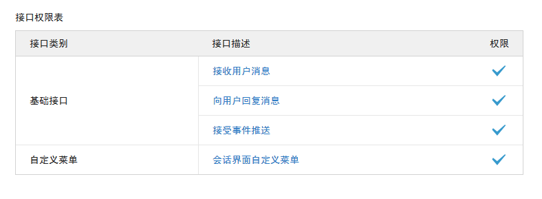
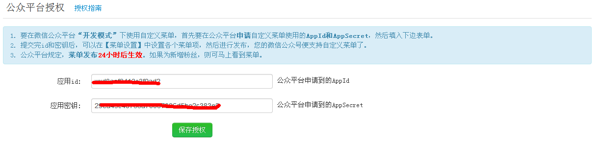
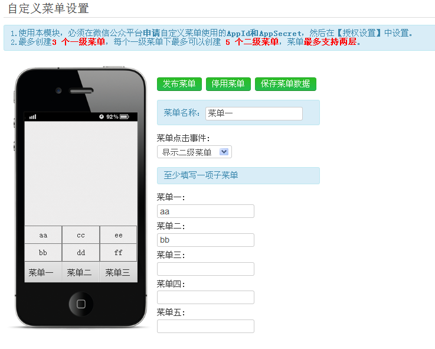

授权指南
自定义菜单是企业微信公众号消息框底部的导航菜单，可以很方便用户进行交互，相当于一个轻量级的APP。
目前自定义菜单只对服务号开放，服务号认证需要企业认证，所以如果是订阅号这个功能是用不了的，如果服务号还没有申请自定义菜单，可以点击-高级功能-开发模式，会有一栏会话界面自定义菜单，点击申请就可以了，申请成功后的界面如下：

将AppId 和AppSecret填写在第三屏平台自定义菜单-授权设置 应用ID和应用密匙里

菜单设置:菜单设置:自定义菜单目前限制只能3个一级菜单，5个二级菜单，每一步设置后要保存菜单。

主菜单名称就是显示在消息框的一级菜单，可以回复文本或图文，图文信息在素材管理理设置好后，可以选择。
添加二级菜单，点击一级菜单后可以创建二级菜单，二级菜单只能同时启用5个。
生成自定义菜单后会在24小时内生效，如果想立即生效，取消关注后重新关注就可以看到了。